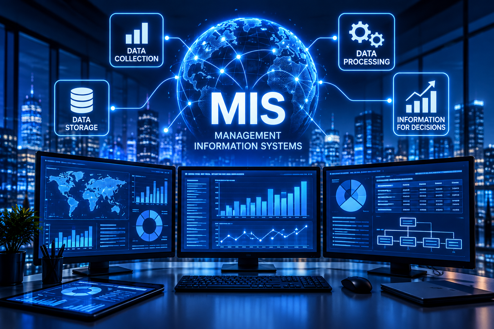

MIS & AI Ethics
Website Overview
Ellee Sodolak, Brooke Dennis, Madie Fowler
October 21, 2026
Home | AI Usage | Malware & Hackers | About Us
Artificial Intelligence

Management Information Systems

What Is Artificial Intelligence?
Artificial Intelligence (AI) refers to technology that allows computers to perform tasks that normally require human intelligence. AI is used in education, healthcare, business, and many other industries.
Why Is AI Important?
AI helps businesses improve efficiency, analyze information, automate tasks, and make informed decisions.
Explore Our Website
Visit our AI Usage page to learn how AI is used in everyday life and business.
Visit our Malware & Hackers page to learn about cybersecurity and online threats.
Original Website Overview
Our website outlines Management Informational Systems and Artificial Intelligence ethics. My group created this website to help explain how technology is used throughout our daily lives. AI can help complete many tasks as well as outline important subjects for any question possible. Our website also highlights cybersecurity and the dangers that hackers and malware hold against us. We also explain how AI is used throughout college and the responsibility we hold to ourselves. Our goal is to help people better understand how AI and MIS affect our daily lives.
AI-Polished Website Overview
Our website explores Management Information Systems (MIS) and the ethical use of Artificial Intelligence (AI). Our group created this website to explain how technology influences our daily lives and the ways we interact with information. Artificial intelligence can assist with completing tasks, answering questions, and organizing important information efficiently. We also highlight cybersecurity and the potential dangers associated with hackers, malware, and online threats. Additionally, our website discusses the responsible use of AI in college and the importance of maintaining academic integrity. Our goal is to help visitors better understand how AI and MIS impact everyday life and why using technology responsibly matters.
Learn More About MIS and Technology
Learn about artificial intelligence at IBM.
Explore technology developments at MIT Technology Review.
Learn about networking and cybersecurity at Cisco.
Important MIS Topics
| MIS Topic Name | Description / Purpose |
|---|---|
| Artificial Intelligence | AI helps businesses automate tasks, analyze data, and make informed decisions. |
| Cybersecurity | Cybersecurity protects computers, networks, and sensitive information from digital threats. |
| Database Management | Database management helps businesses organize, store, and retrieve information. Learn more at IBM. |